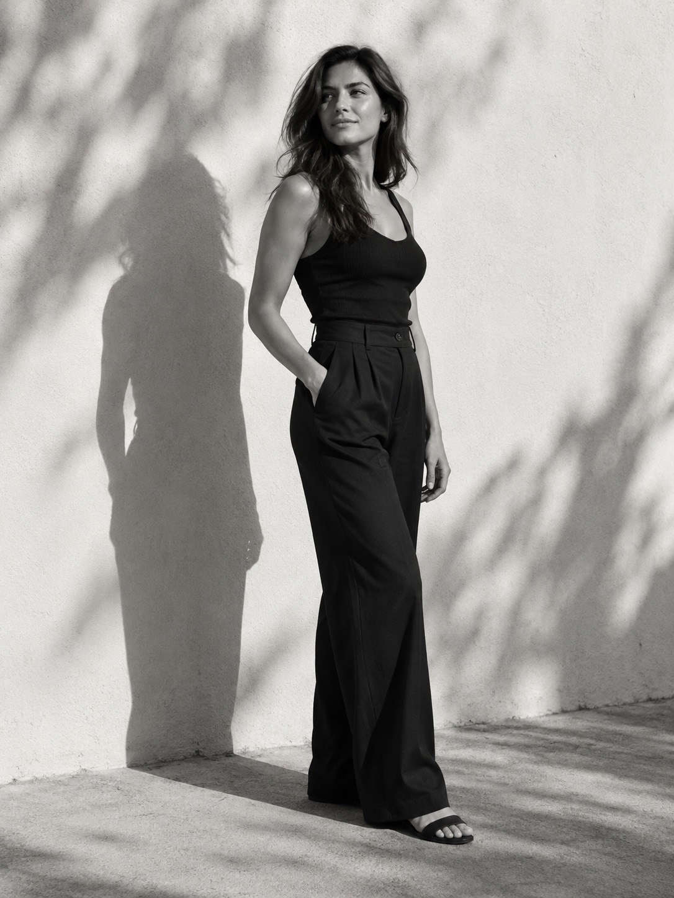

Fix it before
the shot
A camera app for iPhone Works offline. No account. Free to download
It reads the scene and gives you one instruction at a time, like “lower the camera slightly”, so the photo is right when you press the shutter.
Change one thing. Keep the rest.
DistanceKeep both shoes in frame
Technique, style and frame are separate choices in the camera. Change one and the other two stay where you left them.
Technique
Style
Frame
Preview Original, Harbor (Film) and Street (B&W) here. The browser approximates the app’s rendering. In the app, you can also add Fisheye, Glow or a delayed nine-frame Grid.
18 techniques, 4 groups
- People
- 7
- Places
- 7
- Food & things
- 3
- Night
- 1
37 styles, 5 groups
Film (8)
Harbor, Studio, Dusk, Vivid, Sunlit, Everyday, Snapshot, Slide
B&W (3)
Street, Fine, Push
Cinema (20)
Amélie Garden, Grand Budapest, Moonrise Summer, Darjeeling Ochre, Blade Runner Dusk, Matrix Green, Mad Max Heat, Dune Spice, Interstellar Dust, Inception Steel, Dark Knight Blue, Joker Grit, La La Twilight, Her Pastel, Chungking Night, In the Mood Ruby, Fallen Angels, Drive Neon, Godfather Amber, Oz Technicolor
Creative (4)
Cyberpunk Neon, Golden Hour, Faded Vintage, Cool Cinematic
Art (2)
Watercolor-like, Anime-inspired
How PosyCam works
Pick. Choose a shooting type, or use Find a shot to get framing ideas from a reference photo. Your iPhone analyzes it on device. You choose which settings to apply.
Follow. One instruction at a time, below the photo and never over your subject. Zoom, focus and exposure stay in your hands, and hints turn off whenever you like.
Photo: Luca Bravo, Unsplash
Keep. Edit a capture or import a photo from Photos. Compare takes side by side, zoom in together and pick your favorite. Edits preserve the original.
Stays yours
-
No account
Open it and shoot
No sign-up, no profile, no login screen. PosyCam works the moment it opens.
-

On your phone
Scene analysis runs on the device
Pose and scene detection run on your phone. PosyCam never uploads your photos or camera frames.
-
Offline
Airplane mode included
Capture, coaching, editing, the gallery and export all work without a connection.
-
No reshaping
Coaching moves the camera
Long-Leg Fashion changes your camera height and distance. It never stretches or slims anyone.
Free to shoot.
Pro, once.
Shoot in five frame shapes, edit your photos and export without a watermark. The free app also lets you try Find a shot and Roll mode.
PosyCam Pro
- Additional shooting techniques
- All Film, B&W, Cinema and Creative looks
- Watercolor-like and anime-inspired styles
- No subscription and no ads
Common questions
Yes. Capture, coaching, editing, the gallery and export all work offline. A connection is only used to check a Pro purchase, and for crash reports or announcements if you turn those on.
No. Photos and camera frames stay on your phone. They leave only when you save them to your photo library or share them yourself.
No. It coaches a lower camera, the right distance and room for the shoes. The photo itself is never warped.
No. Film, monochrome, watercolor-like and anime-inspired looks are filters applied to your own photo. Nothing is generated or redrawn.
Regular captures appear in the app gallery and, by default, in Photos. In Roll mode, your 24 or 36 frames stay hidden until you develop the contact sheet. Deleting a photo in PosyCam leaves the library copy alone.
Yes. Hints, photo marks, how often hints appear and automatic adjustments each have their own switch, and Manual mode shows no hints at all.
iPhone with iOS 18.2 or later. Android is in development. The app speaks English, Traditional and Simplified Chinese, Japanese, Korean, French, German, Spanish, Brazilian Portuguese and Indonesian.